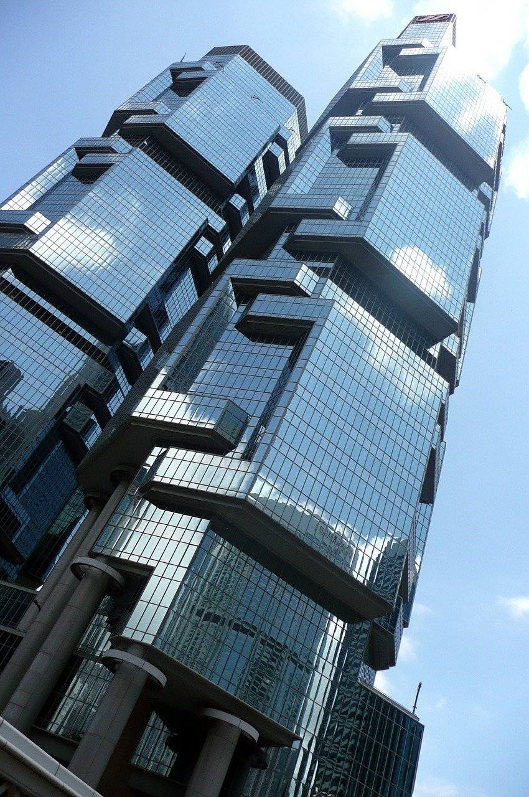

先立後破，這篇隔了三年。
人大了發現寫甚麼只是讓自己有點活過的感覺，
是種沒有市場的人生 NFT，而我需要。
大一歲的願望，唯有「向死而生」。
永井豪少時疑患重病，為了留下「存在過的証據」投入漫畫生涯，三一萬能俠和惡魔人開創了個時代。
村西透拍的是 AV，卻拍出種使命感，要拍人在生死間的情欲與反差。
在威瑪創立到被納綷殺校；包浩斯己死、包浩斯不滅。
王維基說他是大酒店常客，為了思考死前最想留下甚麼。
《十年》導演周冠威認為留在香港面對，最能心裏平安。
《月黑高飛》說希望是危險的，救贖卻別無他門。
田志仁在美國土生土長創作最美的遊戲配樂，我好奇他父母離開香港時是怎樣的心情。
達文西的撲翼機沒成功飛過，卻留下了句「你飛過，便會認定天空是你心之所在」。
向死而生，選擇原來唯有：Get busy living or get busing dying。
嘗試過飛，便會不斷仰望天空想回到那裏，
認定那是你心之所在。
夢想如是、自由如是。
這次，假如，
讓你踏出這一步懷著的不是種恐懼，
而是種希望。
也許比《立》題得更早，
理應先破後立，一直提不了筆，是份沈重。
破，又一個被玷污的中文字，
經歷過四舊四新，
免不了帶點傷感，帶點野蠻。
世事難料，香港卻又離不開某種宿命，
Diaspora 式的格局己定，對我又不陌生。
過了來回地獄又折返人間的數年，
火光紅紅的，人心徨徨的，憂心忡忡的;
遊園驚夢拾回某種踏實。
提筆之際，
朋友別了，
不讓俗世惹上甚麼塵埃變老；
游子搬了，
離鄉別井的又為了尋鄉。
蘋果倒了，
青䓤過的校園進不了，
維園聚不了，
只剩園外仇恨與絕望的刀光。
苦心己有預備，青春成長的光景，
像塊玻璃破碎墮地。
回頭無謂，故「立」才重要。
又唯有真正看「破」，
破惑、破格；破除終點前的迷雾，
才能創出生機。
看到別人看不到的，相信別人不相信的；
設限的往往只有自己。
看破框住自己的是甚麼，
才看到其實框外有甚麼。
起業失敗、失敗又再失敗過，
工作種種，要開創甚麼，原來那樣難。
越計較越輸不起，越默守成規、畏首畏尾，
由心敬佩種種破格之人：
各種離經叛道，不停突破之人，這世界需要更多；
而更大的尊敬，是那些面對死亡擁抱生命的。
破格
伴隨成長的是《Evangelion》和種種機械人動畫。
鐵甲萬能俠、三一不是我的年代，也總在機戰認識。
Eva 驚艷的人機設定，心理描寫，
抓住了我青春期的目光，
那時未明為何經典，而經典背後還有經典。
到看了紀念作《 Devilman crybaby》
才重新認識永井豪。
由監製過蠟筆小新，櫻桃小丸子的湯淺政明執導，又成了新的經典。

時光倒流50年去看，才明白《惡魔人》是劃時代神作。
世人習慣神眼中的世界史觀，
惡魔人意象源自但丁神曲，人走向滅絕，那惡魔眼中的世界觀。
永井豪沒計劃太多大鋼伏線，
隨故事發展探索自圓其說，
這次卻成了個不朽結局與種獨特的暗黑風格，
《寄生獸》、《亞人》或《進擊的巨人》都有其影子。
沒有《鐵甲萬能俠》，沒有人機合一；
沒有《三一》，沒有合體變型玩具；
沒有《甜心戰士》，沒有《美少女戰士》；
沒有《惡魔人》，沒有 EVA。

EVA 那結局，人大了才看得懂， 庵野秀明直言受惡魔人影響：
竹熊：EVA 有十二片翅膀吧。那是路西法嗎？
庵野：是路西法的形象。結果我還是沒能擺脫《惡魔人》。真是沒辦法。
大泉：TV 版播出的時候，我就擔心過如果《EVA》沒有像《惡魔人》那樣完結的話會怎麼辦？
庵野：會和《惡魔人》一樣的。因為只有那樣的故事而已。—《庵野秀明 スキゾ·エヴァンゲリオン》
更好的故事或在場外。
玉音放送後９月出生的永井豪，準備大學時誤以為患上大腸癌，
覺悟「不知死亡何時來臨，總要留下存在過的証據，而不是讀書考試」，開始了漫畫創作生涯。
「人間なんていつ死ぬか分からない。とにかく自分が生きた証拠をつめ跡ぐらいでもいいから残そう。受験勉強なんてしている場合じゃない」 —漫画革命40年 永井豪特集
《破廉恥學園》受世人批判，永井堅持著。
有人說最好的作品，不是創作者紀律或野心所至，而是創作者被吞噬。
我相信永井豪僅是忠誠於自己創作而已。
Netflix 《全裸監督》大熱，拍日本泡沫盛世的奇才村西透。

無視社會道德標準，
從遠赴夏威夷以直升機拍攝AV被FBI逮捕量刑370年；
經營的英語班雇用美軍逃兵、
與黑道勾結、出版非法寫真集等等再7次被捕，
批評都太容易，不需我代勞。
問題是他如何破格，甚麼能驅使他走得遠；
如劇中最後失信一切走火入魔，世界卻如何需要這種基因。
村西起初拍成人電影糊口，卻拍出種使命感，要拍人在生死間的情欲與反差。
隨著社會對我的評價越來越多，我開始意識到我不能辜負觀眾的期望，必須為觀眾呈現令人興奮、心動的作品，慢慢開始萌生一種使命感。
情欲到底為何？人的性欲我覺得分兩種：首先是人的肉體本能的性欲。還有一種是人大腦中想象出的性欲，這是只有人類擁有的能力。
為何只有人類擁有這種能力？因為人會有死亡。假如人能活上百萬年，那人就不會感動了，也不會愛、傷心、哭、笑。正因為有死，人才會驚異，才會感動。情欲就是這種喜悅的極致。我追求的是作為人的原點的極端喜悅。生的喜悅、死亡的絕望，在這之間人心理的落差就是感動和情欲。兩者之間的對比就是情欲的本質。接受死亡才能夠理解拼命活著的意義，也能夠品嘗生之喜悅。人並不是永恒的存在，所以在還活著的時候，都要用力活下去。 — 《一条》專訪
當社會倫理規範本末倒置變得偽善，
越多禁忌越多壓抑，人越追求刺激。
村西一力推動產業，務求把人最原始的情慾釋放。
奇才百年難遇，人性卻萬世如一。
浮世繪流行的不只美人畫和漫畫， 還有春畫艷本描繪各種雲情雨態，
大師葛飾北齋《蛸與海女》，露骨程度比鑽石影像更甚；
喜多村歌磨的《艶歌枕撰》，也許早畫了吉村卓的原型。
春畫不只是實用的嫁妝，還能保平安祈求槍彈不侵：性予力量於生。
到德川吉宗禁好色文學，江戶人不屈，
轉往地下銷售不受檢閱，擺去限制題材更大膽，
一流的畫師配上一流的雕版技術，
留下春畫兩三千件，結果數百年後在大雅之堂大英博物館展出。
串流平台尺道大主題更多樣，主演的山田孝之這次也是種突破。
生意失敗進牢再負債50億，也計比不少人生教練更有資格：人生最重要的，是失去希望時的自我，是不知所措時的自己。
行業骯髒黑暗，剛需反成了泡沫爆破之際的經濟原動力，
每個年代社會的風氣權益也無法一概而論；
各種說教信不信由你，背後的生命力創造力卻無容置疑。
不懂設計，也總聽過「形式追隨功能」、「Less is More」和將其揚光大的「包浩斯」。
一戰結束威瑪共和初立，知識份子懷著改革的理想，
葛羅佩斯(Walter Gorpius)祈望結合工藝、藝術與工業生產，
務實而不失理想，創建無等級之分的公會、「以設計改變社會」。
Architects, sculptors, painters—we all must return to craftsmanship! For there is no such thing as “art by profession.” —Bauhaus Manifesto
Design is neither an intellectual nor a material affair but simply an integral part of the stuff of life, necessary for everyone in a civilised society.”
成立短短數年間大放異彩，及後經歷數任校長各有所長擴展種種領域；在 Dessau 留下強調功能性和理性的經典校舍。
到納粹當道，極權主義要獨佔人的靈魂， Bauhaus被注定地抨撃。
蓋世太保封校，校長密斯·凡德羅Mies van der Rohe 與戰犯羅森堡Alfred Rosenberg談判，不甘妥協更改課程大鋼、撤去猶太藉教師的要求，寧願殺校。

包浩斯解散了，理念卻沒有死。
人材逃難到美國法國和以色列等各地，也許還更造就其 flourish。
來自日本的學生不多，卻啟發了川喜田煉七郎成立新建築工藝學院，
孕育了學生亀倉雄策及其1964年東京奧運海報簡約有力衝擊視覺的風格，
構建了被稱為現代的 Zeitgeist。

大師和和學生輾轉到了伊利諾理工學院、芝加哥設計學院，
葛羅佩斯在哈佛任教，門生包括創造出羅浮宮和中銀大廈的貝聿銘，
設計香港藝術中心至區旗區徽的何弢，
以野獸派為名的 Paul Rudolph
— 走過香港力寶中心和新加坡的鴻福中心，雙城對倒總有某種熟悉感。


20世紀初硝煙四起以色列大量移民湧入，多功能、簡潔的現代主義風格被追捧，來自歐洲的包浩斯學生們又造就了特拉维夫白城。
類近的故事：迎合快速增長的功能主導風格在香港和新加坡的公屋設計得到伸張，
彩虹邨，蘇屋邨，美荷樓等，不為「打卡」而生，卻功能美感並重。
另一包浩斯學生鮑立克 Paulick，則到上海當年的聖約翰大學任教。國共內戰，在上海或國外留學的來到香港成為第一代香港華人建築師。其中范文照的作品有九龍靈糧堂教堂、北角循道衛理堂；瑪利諾中學和九華的小教堂是出自陸謙受。
Das Bauhaus ist tot. Es lebe das Bauhaus.
包浩斯己死、包浩斯不滅。
The spirit of the Bauhaus lives on, not just in style and ethos, but in the idea of designing a better future; not just useful and beautiful, but better for all.
歷久不衰，Villa Tugendhat 百年過還後像摩登豪宅；
高度理性，以 Piet Mondrian 聞名的荷蘭風格派 De Stijl又因包浩斯發揚光大，
包浩斯強大的生命力融入建築、藝術、家俱設計及教育制度，百年各種創作有意無意被影響或暗合，如催出了更符合消費主義的 IKEA。
界定「是不是包浩斯」早以太難，也不重要，
重要是其今天不能否認的存在。


Piet Mondrian, Perfume《Display》
各種破立建構出人所處的世界，
又唯有破妄破執，才找出真正所屬的世界。
Life can be much broader once you discover one simple fact: Everything around you that you call life was made up by people that were no smarter than you. And you can change it, you can influence it…… Once you learn that, you’ll never be the same again. — Steve Jobs
魔童王維基的三次創業故事不用再介紹，
相信工作就是生活的他，
敢作別人不敢之事，每次都撼動整個行業。
演講分享成功之道：
做人工作要任性、要感情用事、
太多事情不能準確計算，理性沒有動力，感性才有動力。
{kind=link}
他說他是「大酒店」的常客，
在無法逃避的終點前，思考人生餘下時間所為何事。
你一日不思考死亡，你的生命還未開始。
明白死亡，才可以堅定生命的價值，選擇做自己認為對的事。
一次死裏逃生後人生脆弱，他憑心做事、相信教育教養所帶領的感情力量。
在王維基的世界觀，最後悔的是「沒有嘗試」，那種夢魘令人靈魂也不得安息。
時代變化快，新事物新機會用過往經驗判斷無謂；
當世事不能預料，能料的唯有自己心中那團火。
最鐘愛的事情，能破釜沉舟投入最大的力量試，才做得最好。
面對社會動璗，《十年》的導演周冠威，選擇再拍攝紀錄片。
無謂猜度紅線，那是認可了紅線。
逃避恐懼，反倒不自由。
「豁出去」忠於信念積極面對，
蕩然看破即使有日身陷囹圄，也是種選擇，
也會自得平安，「内心吶喊的就是自由」。
不由環境政權罷布生命，
任何苦難或際遇都不重要，
他專注於更大的追求：一種自主與殉道的信仰。
Hope, a dangerous thing

Fear Can hold You Prisoner, Hope Can Set You Free
90年代的電影《月黑高飛 Shawshank Redemption》,
票房失利，憑錄影帶和電視卻有口皆碑；
成為不朽神作，拍的是另類美國夢：一個人敢想多遠，能走多遠。
無辜入獄的主角被判終身服刑，
人生準備在那高聳的圍牆中，
沒有出口，奪去你所有，連存在都被篾視的場所完結。
不管是囚徒勞動後一點冰冷的啤酒，
還是在廣播中悅耳的音樂，
主角不借赴死追求，為挽回一刻自由。
抓緊世界的種種美感，刻在心靈不被奪去，
要噢醒那無法被摧毀，屬於自己的一絲希望；
年月間，一步一步向理想進發。
These walls are funny. First you hate ‘em, then you get used to ‘em. Enough time passes, you get so you depend on them. That’s institutionalized.
身邊的圍牆，讓你從反抗，到習慣再依賴；
體制總磨滅心志，在現實棱角往往被磨平。
如戲中摩根費曼飾演的獄友告誡希望是危險的：
追尋理想從不浪漫，如主角在獄被虐打被強暴，被關進臭格數月；
在雷雨之際爬過數個足球場長的「屎渠」才成功擺脫那圍牆。

道貌岸然的獄長拿著聖經說”Salvation lies within”
諷刺的，主角就把越獄的小鎚子藏在裡頭。
正因如此，電影題為 Redemption 而不是 Salvation－－
那是種「自我救贖」，留給敢夢敢想之人。
假若你不信神，你也要相信自己。

因某種價值我們都被予某種原罪，將付出某種代價；
懷著希望而決澤，又正彰顥我們相信的那價值。
70年代一對香港夫婦移民到矽谷 Palo Alto，
兒子成了不折不扣的美國人。音樂才華洋溢，熱愛古音樂又鍾情爵士樂、歌劇和90年代三藩市的狂野。考進 Stanford ，同房是遊戲設計師，設計的是耗了我不少光陰、啟蒙種種歷史文化知識的《文明帝國》（Civilization）。
《文明4》「如期落後」急需找人設計主題曲，畢業後同房Reunion一拍即合，從小就接觸文明系列的田志仁一口答應，從太空回望地球日出東升的簡單構圖發想，找一直伙拍的非洲合唱團以Swahili禱文作主題配上系列首次推出的宗教系統，結果作品《Baba Yetu》成了首個得艾美獎的電腦遊戲音樂；田志仁是Reddit上最炙手可熱的作曲家，在 Kickstarter 錄得破記錄的銷售。

當初許多人否定擁有古典音樂學術背景的他為電動遊戲作曲，怕被定型。
而田志仁覺得新鮮有趣有挑戰性，作品為他展開專業創作生涯，更推翻了過創作電玩音樂是「不務正業」的負面形象。
《文明6》田志仁再為其作曲，看到遊戲開發截圖決定以探索為主題，不止地理上的，還有心智上的。
歌詞來自據說是達文西的名言：
Una volta che avrai, Spiccato il volo, deciderai
– Once you have tasted flight,
Sguardo verso il ciel, saprai:
– Gaze towards the sky, you’ll know that
Lì a casa il cuore sentirai.
– That is where your heart will feel at home.
嘗試過飛，便會不斷仰望天空想回到那裏，
認定那是你心之所在。
夢想如是、自由如是。
達文西發想出撲翼機，到了400年後萊特兄弟才飛上天，
希望的種子，也許又比一切重要。
從來很怕那種全沒意義，套個「某藉華人」去沾個甚麼光。
心裏反倒很好奇，田志仁的雙親到美國時抱著甚樣的心情；
今天帶兒女出外的港人，又在想甚麼。
向死而生
當事業、城市、人生，
從來都是向死而生(Sein-zum-Tode)。
當你看破，
文明的長河中只需忠於自己。
Get busy living, or get busy dying.
說過「假若你認為有人想抹殺你整個世代時，你偏偏要生存得更好。」
當你還能思考，當你還能行動。
黃色的臉孔有紅色的污泥，
黑色的眼珠有白色的恐懼；
西風在東方唱的歌曲卻不必悲傷，
只要你願意相信。
不作消逝的微塵，不好浮雲的光亮；
吹彈可破的身份我不需要；
借來的地方時間我不再稀罕。
這次，假如，
讓你踏出這一步懷著的不是種恐懼，
而是種希望。
只要相信，沒有人是孤兒。
只要相信，遊戲還是自己的。
只要相信，你能告訴子女你創造並忠於個怎樣的身份，
只要相信，你能告訴自己曾經為過甚麼付出而無悔。
只要相信，孩子你能飛。